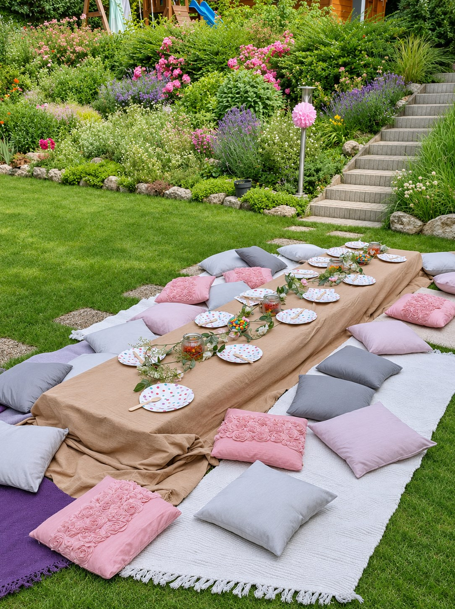

Háromféle öröm.
Egy Csiriviri.
Szülinapi program, arcfestés vagy kézzel készült dísz? Válaszd ki, mire készültök.

Szülinapi
zsúr
Játékos program a gyerekekhez és az alkalomhoz igazítva.
Ajánlatot kérek
Arcfestés és
csillámtetoválás
Színes minták szülinapra és rendezvényre, külön vagy együtt.
Ajánlatot kérek
Kézműves
díszek
Egyedi ajándékok és dekorációk, személyes elképzelésekhez.
Aktuális díszek a FacebookonÉvi története
Örülök, hogy benéztél hozzám!
Évi vagyok, a Csiriviri megálmodója. A vállalkozásomat 2012-ben indítottam, de a közös játék, az alkotás és az örömszerzés szeretete már jóval korábban az életem része volt.
Óvodapedagógusként mindig közel álltak hozzám a gyerekek. Később gyerekzsúrokat kezdtem szervezni, majd az arcfestés és a csillámtetoválás is megérkezett az életembe. A kézműveskedés a családomnak és a barátaimnak készített ajándékokkal indult. Ma mindkét világ hozzátartozik a Csirivirihez.
Szeretettel: Évi

A Csiriviri mögött
Minden alkalom más.
Az egyeztetés is személyes.
Gyerekekhez igazítva
A zsúr programját az életkor, a létszám és a helyszín alapján állítjuk össze.
Többféle élmény
Arcfestést és csillámtetoválást külön vagy együtt is kérhetsz rendezvényre.
Egyedi alkotások
A kézműves díszekről és a saját elképzelésedről közvetlenül Évivel egyeztethetsz.
A kézműves világból
Egy dísz, amit jó hazavinni. Vagy továbbadni.
Az aktuális alkotásokat a Facebook-oldalon találod. Ha valamelyik megtetszik, vagy saját ötleted van, írj Messenger-üzenetet, és egyeztetjük a lehetőségeket.
Megnézem az aktuális díszeketVisszajelzések
A legkedvesebb üzenetek
Szülinapi élményekről és kézműves alkotásokról írták Évinek.
„Mindenkitől azt kaptuk, hogy jól érezték magukat a gyerekek – de szerintem látszott is. Kitti nagyon boldog azóta is a fellegekben száll. Remélem még találkozunk!”Szülinapi visszajelzés
„Csodaszép asztali díszt kaptam, tökéletes csomagolásban és hamar meg is érkezett. Minden az előzetesen megbeszéltek szerint történt. 🙂 Teljes szívből ajánlom!”Éva, vásárlói visszajelzés
Meséld el, milyen alkalomra készültök!
Írd meg a dátumot, a helyszínt és röviden az elképzelést. Évi egyezteti veled a lehetőségeket.
Üzenetet írok Évinek